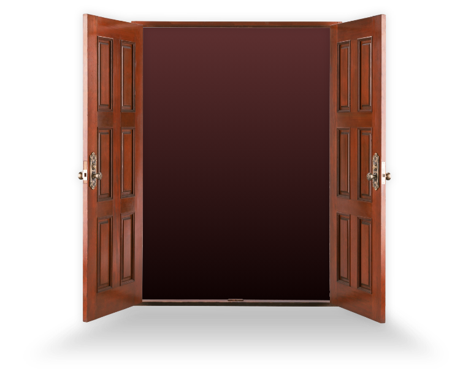
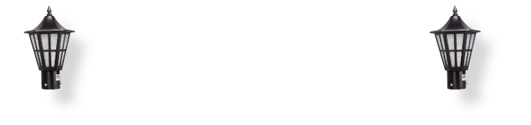
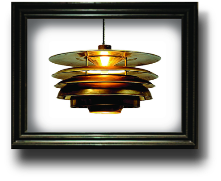
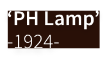
폴 헤닝센 자신의 이름을 따
루이스폴센에서 발표하였고,
파리 세계 박람회에서 수상해
‘파리 램프’라고도 불린다.
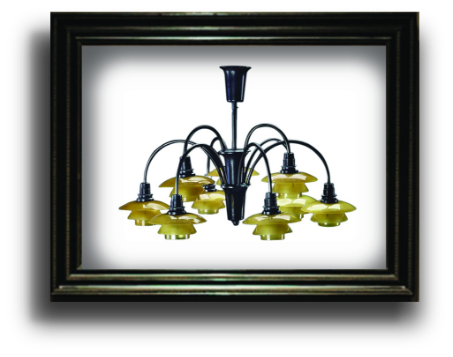
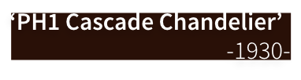
PH1 셰이드를 여러 개 사용해
2층 또는 1층으로 변주한
샹들리에 중 하나이다.
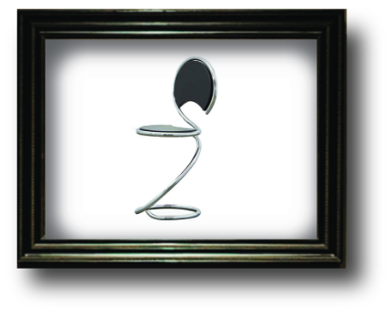
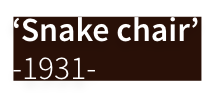
뱀의 모습에서 영감을 얻어
철제 튜브 프레임으로 디자인한
스내이크 체어는
뉴욕 현대 미술관에서 소장중이다.
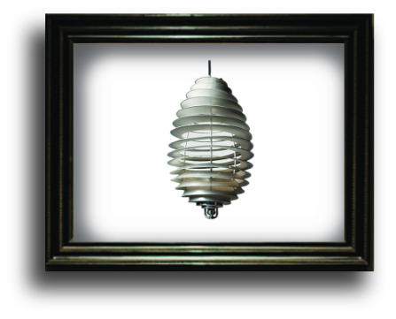
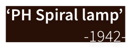
오르후스 대학을 위해 제작된 모델로,
여러 겹, 여러층의 크리스털이
길게 늘어지는 샹들리에의 느낌을
현대적으로 표현한 작품이다.
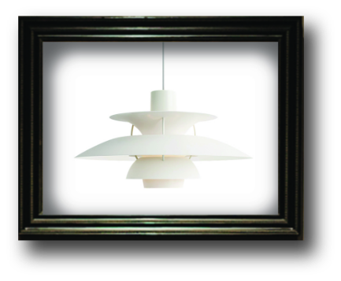
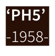
어떤 종류의 전구를 사용하더라도
눈부심이 전혀 없으며,
개인적인 생각으로 현재까지 가장
유명하고 보편화된 조명이라 생각한다.
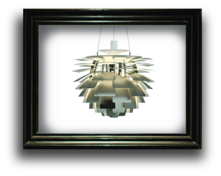
폴 헤닝센의 걸작 중 하나로,
각 줄에 6개씩 패널을 붙여
광원이 보이지 않아
조명보단 설치작품의 느낌이며
인더스트리얼 샹들리에처럼 보인다.
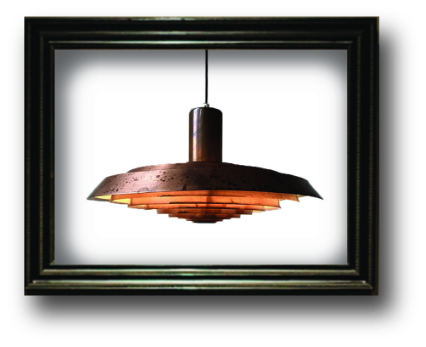
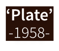
UFO를 떠올라게 하는
미래지향적 디자인의 펜던트 조명으로,
13개의 링으로
인더스트리얼 스타일로 제작되었다.
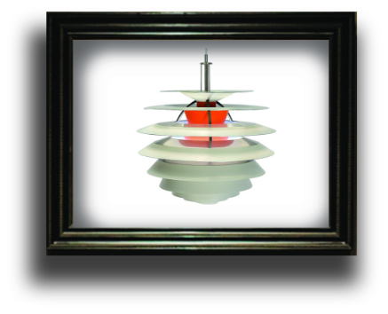
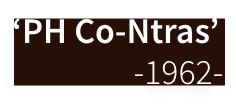
화이트, 오렌지 메탈, 크롬 스틸,
총 4가지 다른 표면에
10개의 셰이드를 달았다.
안에 있는 붉은색 펜던트 튜브가
화이트와 대조적인 인상을 연출한다.
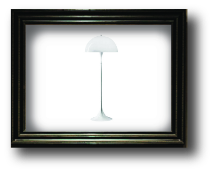
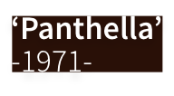
베르너판톤과 루이스폴센이
합작하여 만든 조명으로
버섯을 떠올리게 한다.
폴 헤닝센이 디자인하지 않있지만,
유명하고 보편화된 조명으로
빼놓을 수 없는 조명 중 하나이다.
CLICK TO EXIT
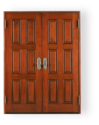
Copyright 2023. JANGSUNGJUN All rights reserved.
WELLCOME!
‘PH의 시작’